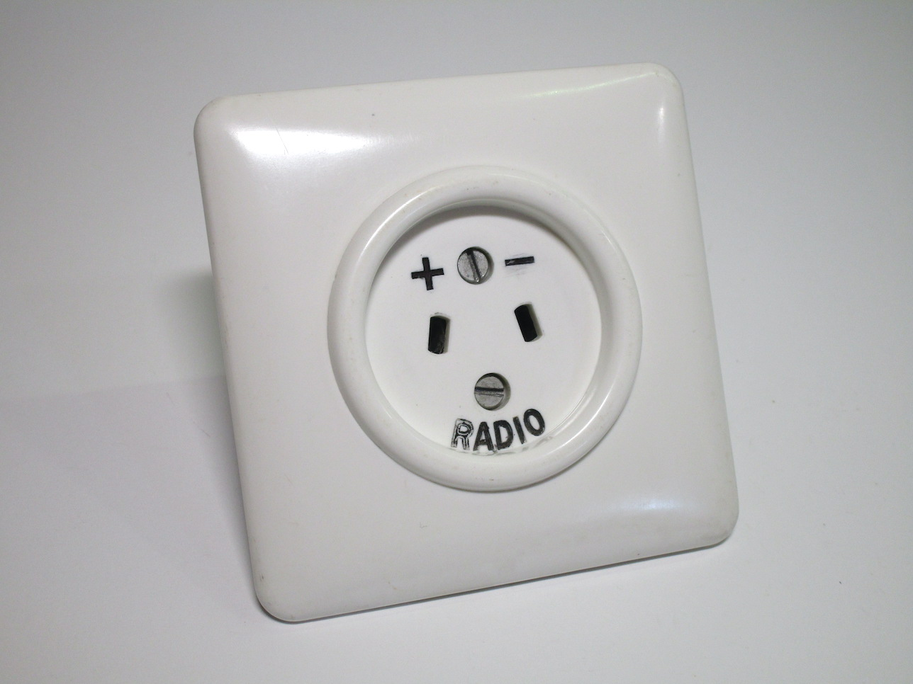
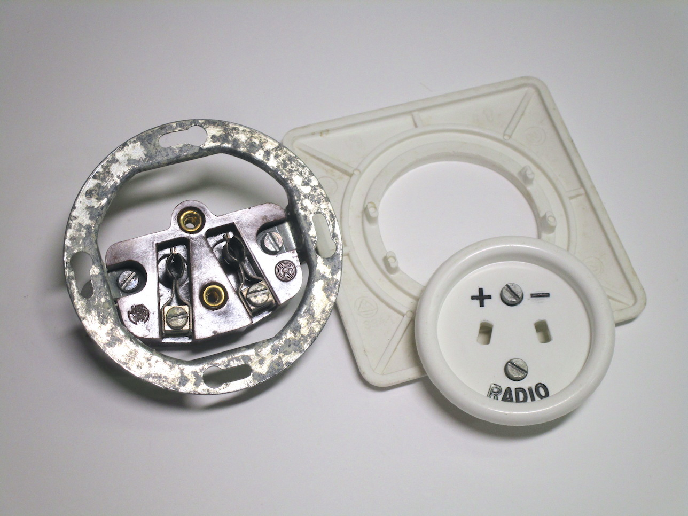
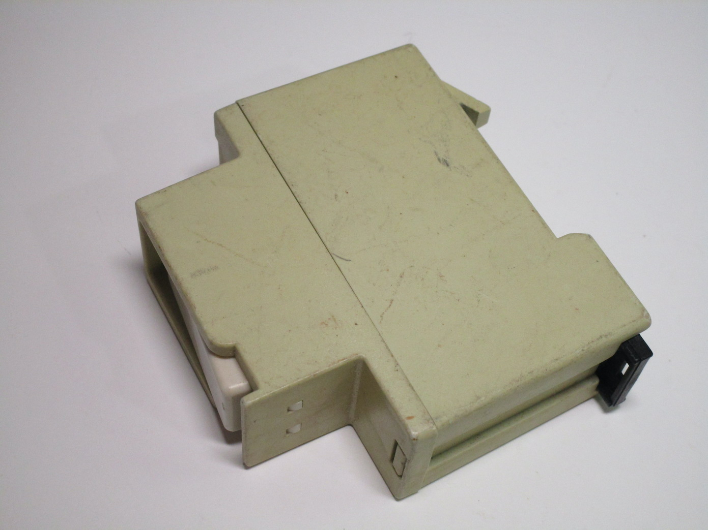
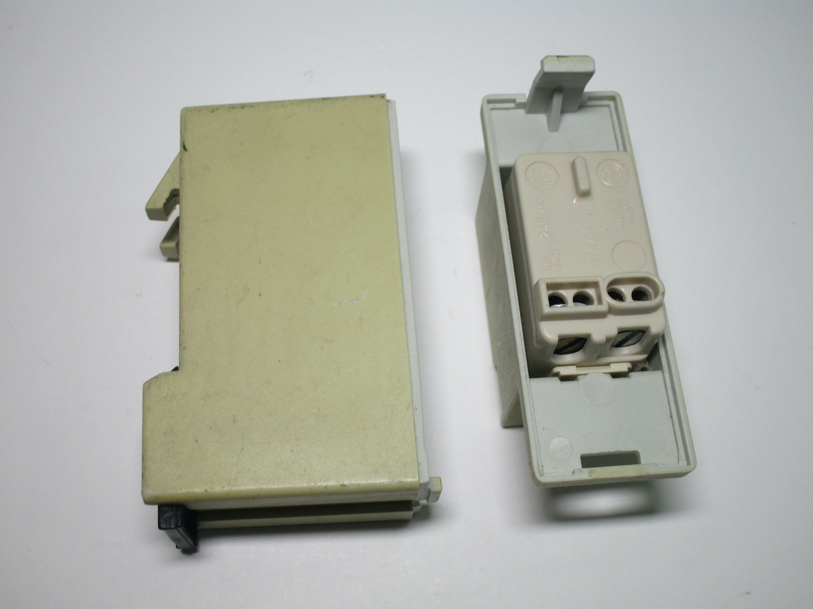
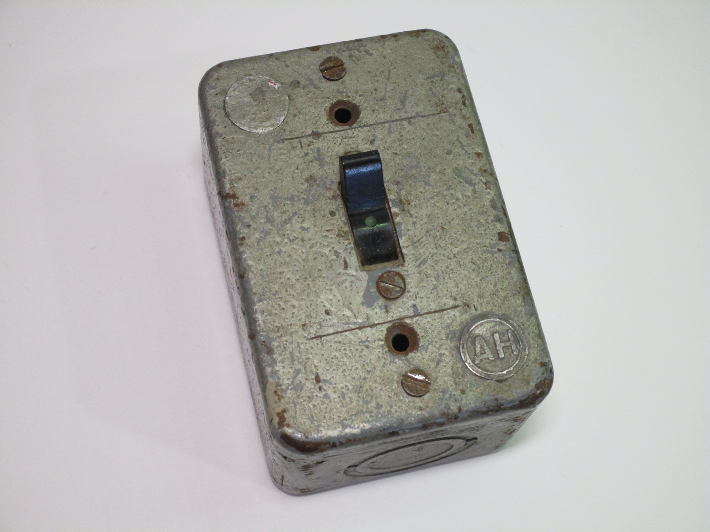
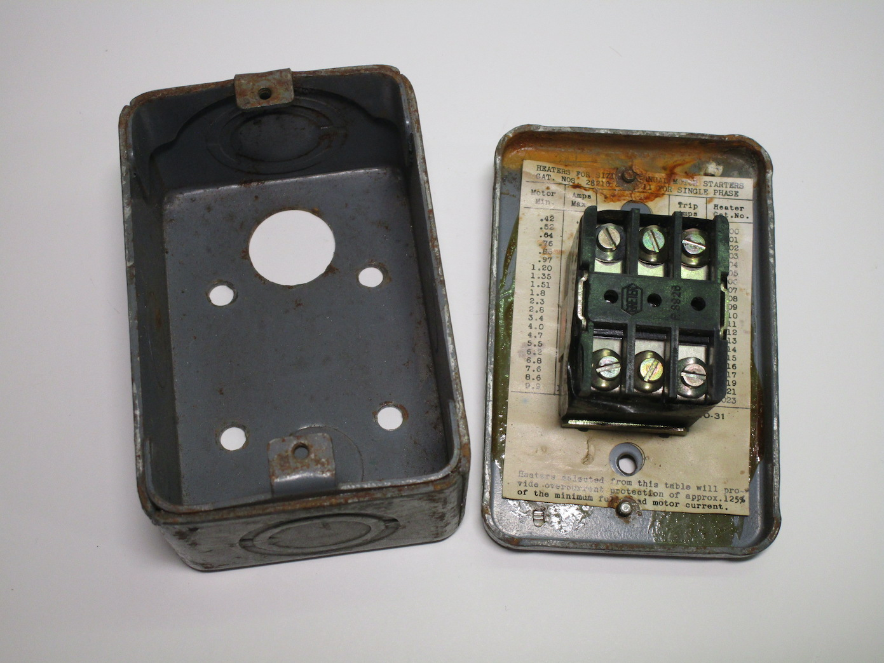
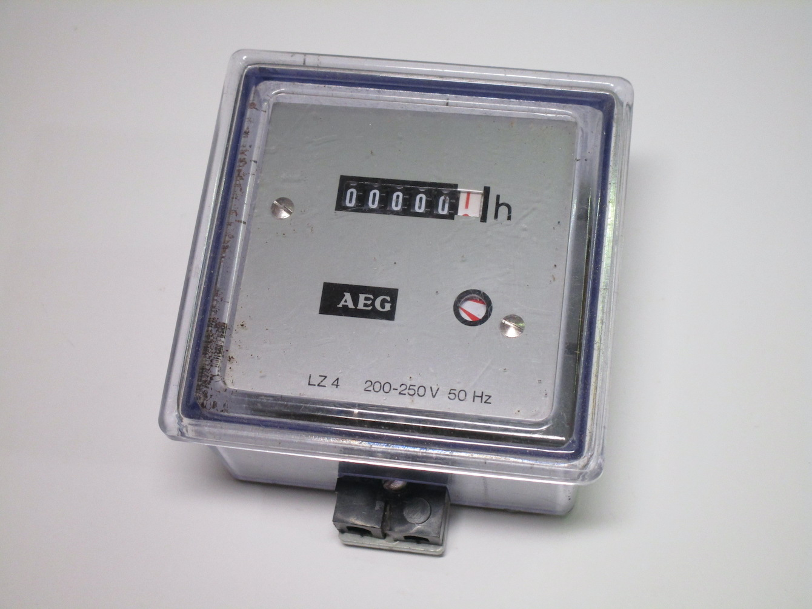
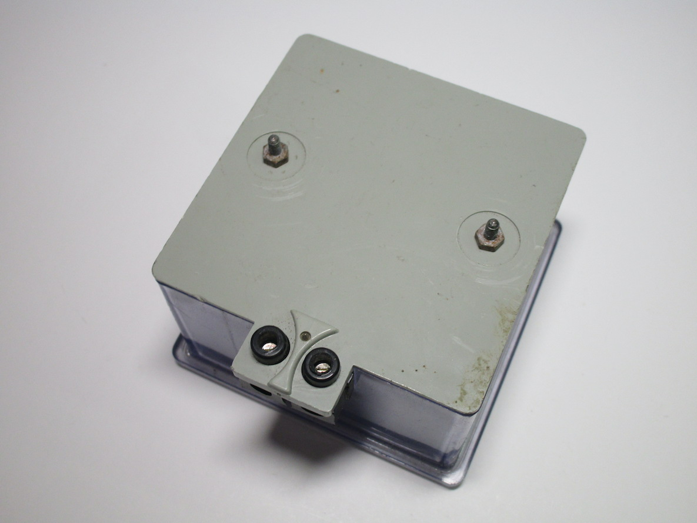

Other devices and unusual items
This page contains the items in my collection that don't really fit anywhere else.
German radio antenna connector
This socket from Germany is meant to be connected to an antenna and used with a radio, as written on the device itself.
The connector is polarised (with the positive and negative holes labelled up on the front cover); two screws on the front remove the faceplate which then also reveals the connections and screw holes for mounting to a wallbox.
 {kind=link}
{kind=link}
DIN rail lightswitch
The flexibility of the DIN rail means that it can be used for many things other than just breakers - this, for example, is a lightswitch meant to fit on one. This can be useful for controlling lights in a more industrial or specialised usecase, such as a bank of lights with a main breaker next to them.
The lightswitch inside is simply a module, made by Vimar - it's possible to have things other than a lightswitch installed, such as a power socket, depending on the usecase. This way the flexibility of modular electrical devices can be combined with the one present in the DIN rail system.
 {kind=link}
{kind=link}
Metal-cased isolator switch
 {kind=link}
{kind=link}

AEG mains-powered hour meter
This is a fairly simple hour meter - once powered up, by mains voltage, it counts the hours that it's been powered up for. This is useful for machinery or equipment that may need something to happen after a certain point, like servicing or replacement of components.
 {kind=link}
{kind=link}